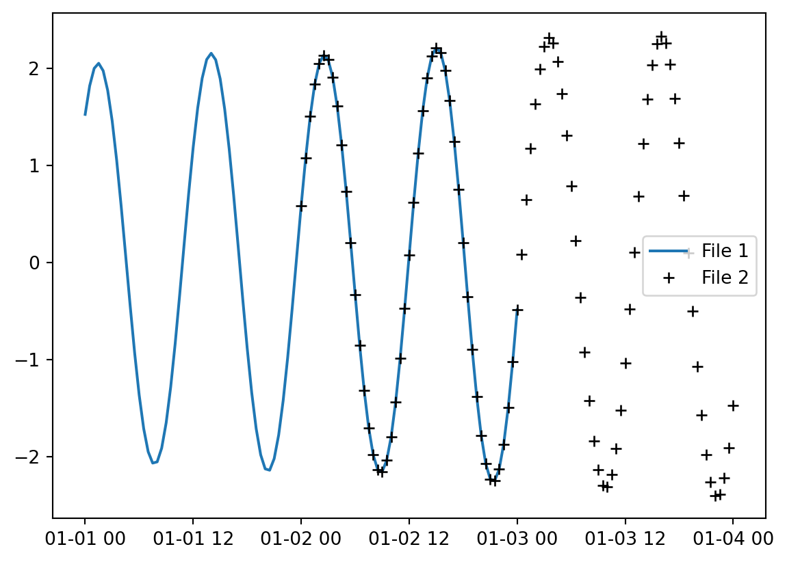
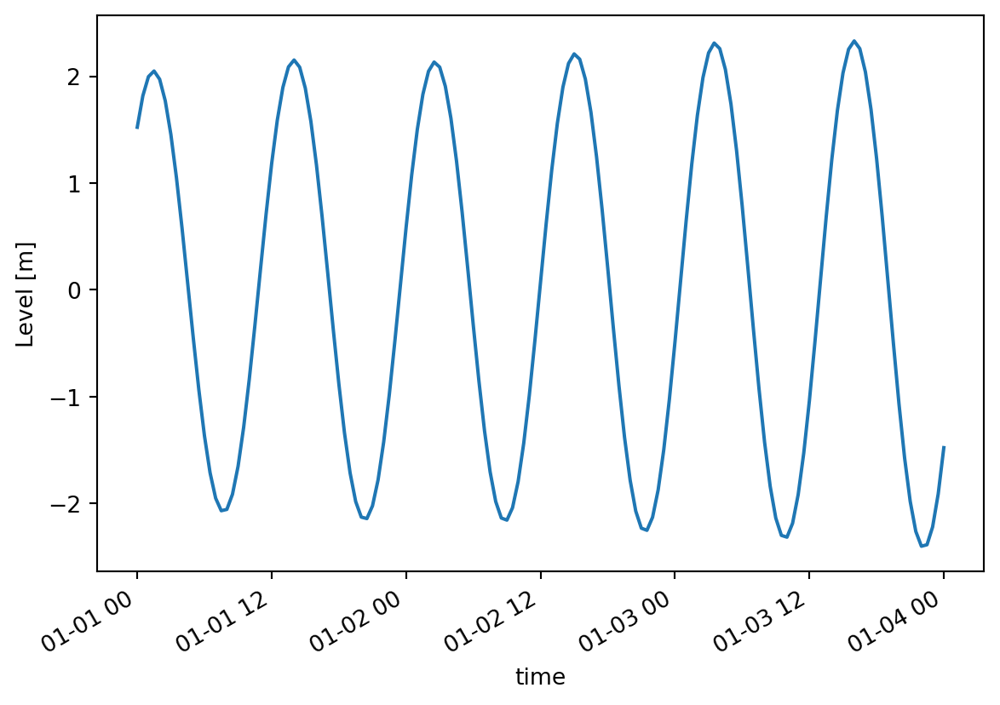
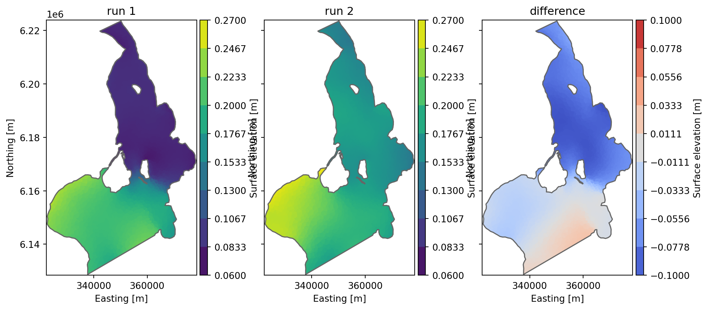
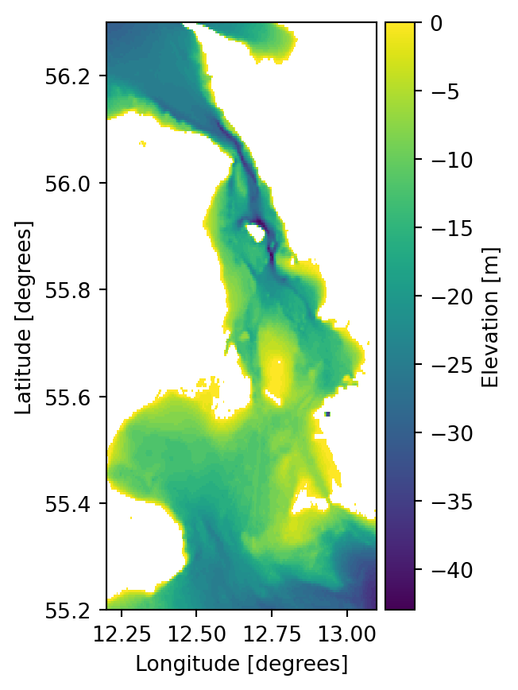
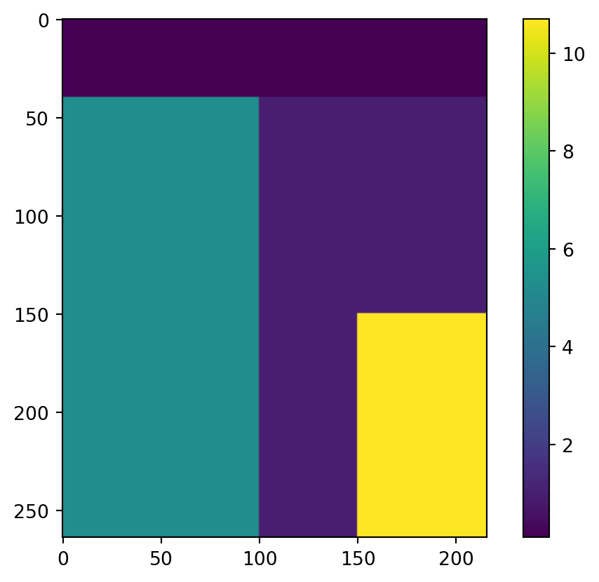
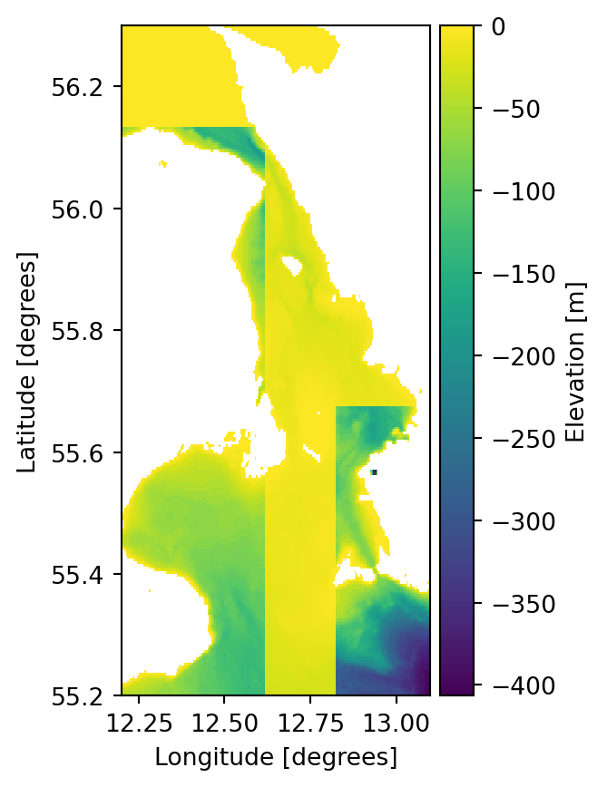
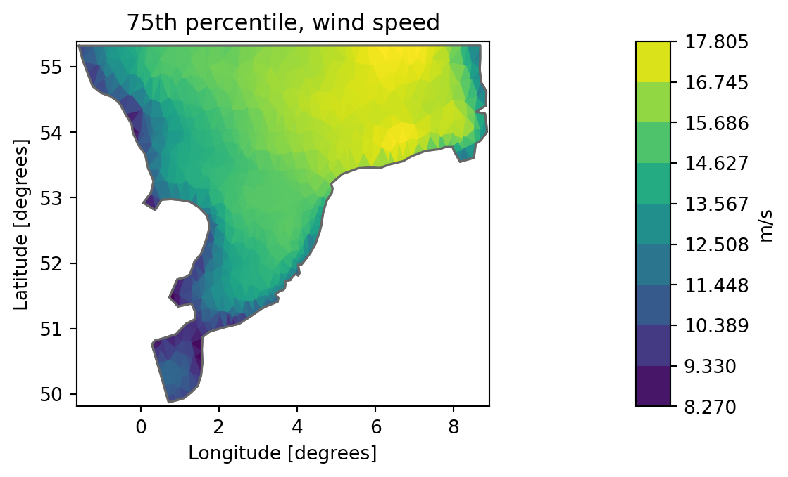

import matplotlib.pyplot as plt
import mikeio
import mikeio.genericGeneric dfs processing
Tools and methods that applies to any type of dfs files.
- mikeio.read()
- mikeio.generic: methods that read any dfs file and outputs a new dfs file of the same type
- concat: Concatenates files along the time axis
- scale: Apply scaling to any dfs file
- sum: Sum two dfs files
- diff: Calculate difference between two dfs files
- extract: Extract timesteps and/or items to a new dfs file
- time-avg: Create a temporally averaged dfs file
- quantile: Create temporal quantiles of dfs file
- concat: Concatenates files along the time axis
Concatenation
Take a look at these two files with overlapping timesteps.
t1 = mikeio.read("../data/tide1.dfs1")
t1<mikeio.Dataset>
dims: (time:97, x:10)
time: 2019-01-01 00:00:00 - 2019-01-03 00:00:00 (97 records)
geometry: Grid1D (n=10, dx=0.06667)
items:
0: Level <Water Level> (meter)t2 = mikeio.read("../data/tide2.dfs1")
t2<mikeio.Dataset>
dims: (time:97, x:10)
time: 2019-01-02 00:00:00 - 2019-01-04 00:00:00 (97 records)
geometry: Grid1D (n=10, dx=0.06667)
items:
0: Level <Water Level> (meter)Plot one of the points along the line.
plt.plot(t1.time,t1[0].isel(x=1).values, label="File 1")
plt.plot(t2.time,t2[0].isel(x=1).values,'k+', label="File 2")
plt.legend()
mikeio.generic.concat(infilenames=["../data/tide1.dfs1",
"../data/tide2.dfs1"],
outfilename="concat.dfs1") 0%| | 0/2 [00:00<?, ?it/s]100%|██████████| 2/2 [00:00<00:00, 791.75it/s]c = mikeio.read("concat.dfs1")
c[0].isel(x=1).plot()
c<mikeio.Dataset>
dims: (time:145, x:10)
time: 2019-01-01 00:00:00 - 2019-01-04 00:00:00 (145 records)
geometry: Grid1D (n=10, dx=0.06667)
items:
0: Level <Water Level> (meter)
Difference between two files
Take difference between two dfs files with same structure - e.g. to see the difference in result between two calibration runs
fn1 = "../data/oresundHD_run1.dfsu"
fn2 = "../data/oresundHD_run2.dfsu"
fn_diff = "oresundHD_difference.dfsu"
mikeio.generic.diff(fn1, fn2, fn_diff) 0%| | 0/5 [00:00<?, ?it/s]100%|██████████| 5/5 [00:00<00:00, 3164.08it/s]_, ax = plt.subplots(1,3, sharey=True, figsize=(12,5))
da = mikeio.read(fn1, time=-1)[0]
da.plot(vmin=0.06, vmax=0.27, ax=ax[0], title='run 1')
da = mikeio.read(fn2, time=-1)[0]
da.plot(vmin=0.06, vmax=0.27, ax=ax[1], title='run 2')
da = mikeio.read(fn_diff, time=-1)[0]
da.plot(vmin=-0.1, vmax=0.1, cmap='coolwarm', ax=ax[2], title='difference');
Extract time steps or items
The extract() method can extract a part of a file:
- time slice by specifying start and/or end
- specific items
infile = "../data/tide1.dfs1"
mikeio.generic.extract(infile, "extracted.dfs1", start='2019-01-02')e = mikeio.read("extracted.dfs1")
e<mikeio.Dataset>
dims: (time:49, x:10)
time: 2019-01-02 00:00:00 - 2019-01-03 00:00:00 (49 records)
geometry: Grid1D (n=10, dx=0.06667)
items:
0: Level <Water Level> (meter)infile = "../data/oresund_vertical_slice.dfsu"
mikeio.generic.extract(infile, "extracted.dfsu", items='Salinity', end=-2)e = mikeio.read("extracted.dfsu")
e<mikeio.Dataset>
dims: (time:2, element:441)
time: 1997-09-15 21:00:00 - 1997-09-16 00:00:00 (2 records)
geometry: DfsuVerticalProfileSigmaZ (441 elements, 550 nodes)
items:
0: Salinity <Salinity> (PSU)Scaling
Adding a constant e.g to adjust datum
ds = mikeio.read("../data/gebco_sound.dfs2")
ds.Elevation[0].plot();
ds['Elevation'][0,104,131].to_numpy()np.float32(-1.0)This is the processing step.
mikeio.generic.scale("../data/gebco_sound.dfs2",
"gebco_sound_local_datum.dfs2",
offset=-2.1
) 0%| | 0/1 [00:00<?, ?it/s]100%|██████████| 1/1 [00:00<00:00, 1288.97it/s]ds2 = mikeio.read("gebco_sound_local_datum.dfs2")
ds2['Elevation'][0].plot()
ds2['Elevation'][0,104,131].to_numpy()np.float32(-3.1)Spatially varying correction
import numpy as np
factor = np.ones_like(ds['Elevation'][0].to_numpy())
factor.shape(264, 216)Add some spatially varying factors, exaggerated values for educational purpose.
factor[:,0:100] = 5.3
factor[0:40,] = 0.1
factor[150:,150:] = 10.7
plt.imshow(factor)
plt.colorbar();
The 2d array must first be flipped upside down and then converted to a 1d vector using numpy.ndarray.flatten to match how data is stored in dfs files.
factor_ud = np.flipud(factor)
factor_vec = factor_ud.flatten()
mikeio.generic.scale("../data/gebco_sound.dfs2",
"gebco_sound_spatial.dfs2",
factor=factor_vec
) 0%| | 0/1 [00:00<?, ?it/s]100%|██████████| 1/1 [00:00<00:00, 1229.64it/s]ds3 = mikeio.read("gebco_sound_spatial.dfs2")
ds3.Elevation[0].plot();
Derived items
Creating derived items from existing items, e.g. current speed from u and v velocities.
from mikeio.generic import DerivedItem
fn = "../data/oresundHD_run1.dfsu"
fn_derived = "oresundHD_speed.dfsu"
mikeio.generic.transform(
fn,
fn_derived,
[
DerivedItem(
name="Current speed",
type=mikeio.EUMType.Current_Speed,
unit=mikeio.EUMUnit.knot,
func=lambda x: 1.94 * np.sqrt(x["U velocity"] ** 2 + x["V velocity"] ** 2),
)
],
)Time average
fn = "../data/NorthSea_HD_and_windspeed.dfsu"
fn_avg = "Avg_NorthSea_HD_and_windspeed.dfsu"
mikeio.generic.avg_time(fn, fn_avg) 0%| | 0/66 [00:00<?, ?it/s]100%|██████████| 66/66 [00:00<00:00, 24528.09it/s]ds = mikeio.read(fn)
ds.mean(axis=0).describe() # alternative way of getting the time average| Surface elevation | Wind speed | |
|---|---|---|
| count | 958.000000 | 958.000000 |
| mean | 0.449857 | 12.772706 |
| std | 0.178127 | 2.367667 |
| min | 0.114355 | 6.498364 |
| 25% | 0.373691 | 11.199439 |
| 50% | 0.431747 | 12.984060 |
| 75% | 0.479224 | 14.658077 |
| max | 1.202888 | 16.677952 |
ds_avg = mikeio.read(fn_avg)
ds_avg.describe()| Surface elevation | Wind speed | |
|---|---|---|
| count | 958.000000 | 958.000000 |
| mean | 0.449857 | 12.772706 |
| std | 0.178127 | 2.367667 |
| min | 0.114355 | 6.498364 |
| 25% | 0.373691 | 11.199439 |
| 50% | 0.431747 | 12.984060 |
| 75% | 0.479224 | 14.658077 |
| max | 1.202888 | 16.677952 |
Quantile
Example that calculates the 25%, 50% and 75% percentile for all items in a dfsu file.
fn = "../data/NorthSea_HD_and_windspeed.dfsu"
fn_q = "Q_NorthSea_HD_and_windspeed.dfsu"
mikeio.generic.quantile(fn, fn_q, q=[0.25,0.5,0.75])ds = mikeio.read(fn_q)
ds<mikeio.Dataset>
dims: (time:1, element:958)
time: 2017-10-27 00:00:00 (time-invariant)
geometry: Dfsu2D (958 elements, 570 nodes)
items:
0: Quantile 0.25, Surface elevation <Surface Elevation> (meter)
1: Quantile 0.5, Surface elevation <Surface Elevation> (meter)
2: Quantile 0.75, Surface elevation <Surface Elevation> (meter)
3: Quantile 0.25, Wind speed <Wind speed> (meter per sec)
4: Quantile 0.5, Wind speed <Wind speed> (meter per sec)
5: Quantile 0.75, Wind speed <Wind speed> (meter per sec)da_q75 = ds["Quantile 0.75, Wind speed"]
da_q75.plot(title="75th percentile, wind speed", label="m/s")
Clean up
import os
os.remove("concat.dfs1")
os.remove("oresundHD_difference.dfsu")
os.remove("extracted.dfs1")
os.remove("extracted.dfsu")
os.remove("gebco_sound_local_datum.dfs2")
os.remove("gebco_sound_spatial.dfs2")
os.remove("Avg_NorthSea_HD_and_windspeed.dfsu")
os.remove(fn_q)
os.remove("oresundHD_speed.dfsu")